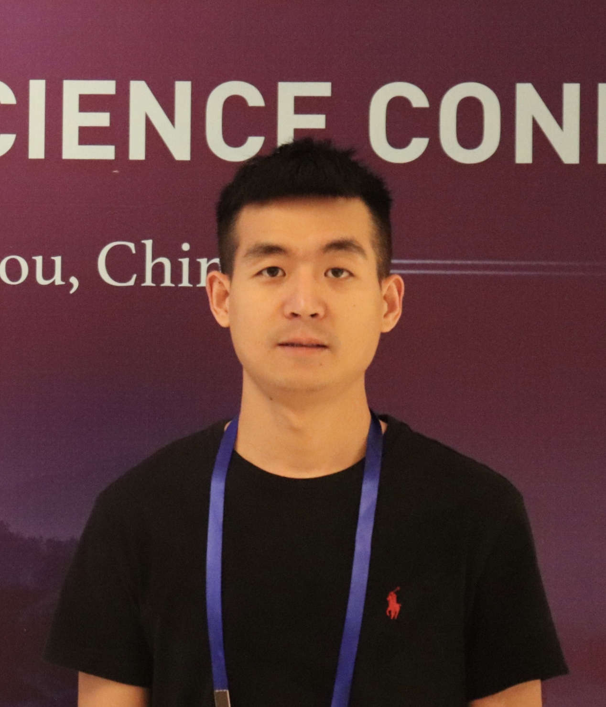
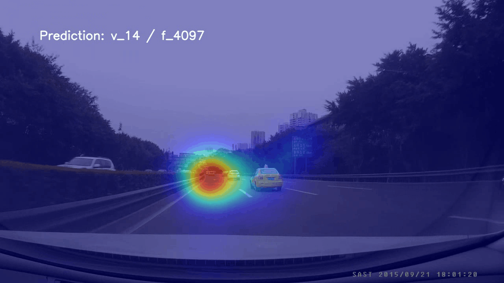
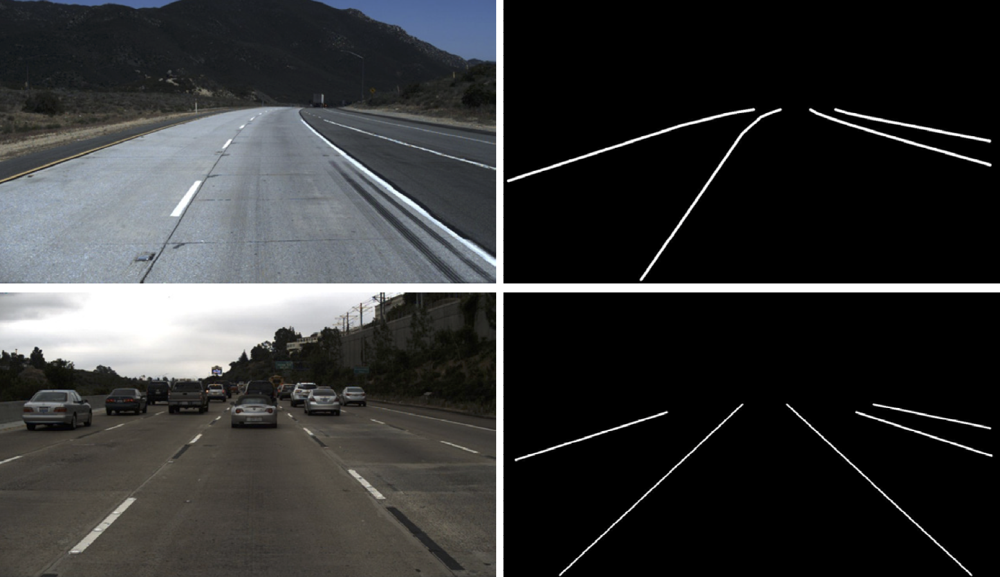
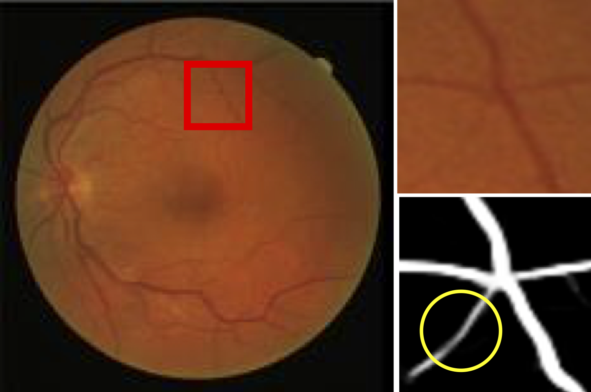

|
 |
Tao Deng (邓涛)
Associate Professor
Visual cognition and computing, Visual attention mechanism, Computer vision, Intelligent transportation
视觉认知计算、视觉注意机制、计算机视觉、智能交通
School of Information Science and Technology
Southwest Jiaotong University
No. 999, Xi'an Road, Pidu District, Chengdu, Sichuan, 611756, P. R. China.
Email:tdeng [AT] swjtu.edu.cn; tinydao [AT] 163.com
[Google Scholar]
[中文]
|
About Me
Tao Deng received the Ph.D. degree in Center for Visual Cognition and Brain-Inspired Computation (ViCBiC),
MOE Key Lab for Neuroinformation, School of Life Science and Technology, University of Electronic Science and Technology of China(UESTC) in 2018.
He was a visiting PhD from Oct. 2016 to Oct. 2017 in
Vision Research Lab,
Department of Electrical and Computer Engineering, University of California Santa Barbara (UCSB), CA.
Now, he is with School of Information Science and Technology, Southwest Jiaotong University.
His current research interests include human visual attention modeling (including bottom-up and top-down), eye tracking, saliency detection, computer vision, deep learning, image/video processing, traffic driving scene visual prediction model, intelligent transportation.
Research Interests
Human visual attention modeling (including bottom-up and top-down), eye tracking, saliency detection, computer vision, deep learning, image/video processing,
traffic driving scene visual prediction model, intelligent transportation. He conducts interdisciplinary research at the intersection of visual cognition and computer vision.
His research aims to explore the underlying computational theory of visual cognition and develop bio-inspired methods for computer vision applications.
Recent research topics:
Visual attention & understranding in traffic driving scenes
Computer vision in traffic scenes
Medical image processing
Employment
2022.01--now
Associate Professor, School of Information Science and Technology, Southwest Jiaotong University, Chengdu, China.
2018.09--2021.12
Assistant Professor, School of Information Science and Technology, Southwest Jiaotong University, Chengdu, China.
2021.07--now
Postdoctoral Fellow, School of Information Science and Technology, Southwest Jiaotong University, Chengdu, China. (Co-advisor: Xiangguo Gu)
Educations
2016.10--2017.10
Visiting PhD program in Computer vision, Deep learning, Image/video processing
Vision Research Lab, Department of Electrical and Computer Engineering, University of California Santa Barbara (UCSB), CA. (Superadvisor: Prof. B.S. Manjunath)
2012.09--2018.06
M.S. & Ph.D. program in Visual attention, Vision computation, Computer Vision, Saliency detection, Intelligent transportation
Center for Visual Cognition and Brain-Inspired Computation (ViCBiC), Key Laboratory for Neuroinformation of the Ministry of Education,
University of Electronic Science and Technology of China (UESTC), Chengdu, China (Superadvisor: Prof. Hongmei Yan, Prof. Yong-Jie Li)
2008.09--2012.07
B.S. in Information and Computing Science Department of Mathematics and Computer Science, Hunan University of Science and Technology
Professional Activities
IEEE, CCF, CAA, CAAI Member
Reviewer for IEEE T-IP, IEEE Trans. Intelligent Transportation Systems, IEEE T-MM, Expert Systems With Applications, IEEE Intelligent Transportation Systems Magazine, IEEE ITSC
Projects and Publications
|  |
Visual Attention in Traffic Driving
- Tao Deng, Lianfang Jiang, Yi Shi, Jiang Wu, Zhangbi Wu, Shun Yan, Xianshi Zhang*, and Hongmei Yan*. Driving Visual Saliency Prediction of Dynamic Night Scenes via a Spatio-Temporal Dual-Encoder Network. IEEE Transactions on Intelligent Transportation Systems (TITS), 2023.
[Paper]
- Pengcheng Du#, Tao Deng#, Fei Yan*. What Causes a Driver's Attention Shift? A Driver's Attention-Guided Driving Event Recognition Model. International Joint Conference on Neural Networks (IJCNN), 2023.
[Paper]
- Han Tian, Tao Deng*, and Hongmei Yan. Driving as well as on a Sunny Day? Predicting Driver's Fixation in Rainy Weather Conditions via a Dual-branch Visual Model. IEEE/CAA Journal of Automatica Sinica, 2022.
[Paper]
- Long Qin, Yi Shi, Yahui He, Junrui Zhang, Xianshi Zhang, Yongjie Li, Tao Deng* and Hongmei Yan*. ID-YOLO: Real-Time Salient Object Detection Based on the Driver's Fixation Region. IEEE Transactions on Intelligent Transportation Systems (TITS), 2022.
[Paper]
- Shihui Ji, Tao Deng*, Fei Yan, and Pengcheng Du. A Driving Position-Sensitive Neural Network for Driver Fixation Prediction. The 41st Chinese Control Conference , 2022.
- Tao Deng*, Fei Yan, Hongmei Yan. Driving Video Fixation Prediction Model via Spatio-Temporal Networks and Attention Gates. IEEE International Conference on Multimedia and Expo (ICME), 2021.
[Paper]
- Tao Deng, Hongmei Yan*, Long Qin, Thuyen Ngo, B.S. Manjunath. How Do Drivers Allocate Their Potential Attention? Driving Fixation Prediction via Convolutional Neural Networks. IEEE Transactions on Intelligent Transportation Systems. 2020.
[Paper][Data & Code]
- Tao Deng, Hongmei Yan*, Yong-Jie Li*. Learning to Boost Bottom-Up Fixation Prediction in Driving Environments via Random Forest. IEEE Transactions on Intelligent Transportation Systems, 2018.
[Paper]
- Tao Deng, Kaifu Yang, Yong-Jie Li, Hongmei Yan*. Where does the driver look? Top-down based saliency detection in a traffic driving environment. IEEE Transactions on Intelligent Transportation Systems, 2016.
[Paper] [Data & Code]
- Tao Deng, Andong Chen, Min Gao, Hongmei Yan*. Top-down based saliency model in traffic driving environment. IEEE 17th International Conference on Intelligent Transportation Systems (ITSC), 2014.
[Paper]
- Tao Deng, Enqing Luo, Yanshan Zhang, and Hongmei Yan*, Selective attention based saliency of traffic images and characteristics of eye movement. Journal of University of Electronic Science and Technology of China, 2014.
|
|  |
Computer Vision in Traffic Scene
- Jiyong Zhang, Tao Deng*, and Fei Yan. TARConvGRU: A Cross-dimension Spatiotemporal Model for Lane Detection. International Joint Conference on Neural Networks, 2022.
[Paper]
- Jiyong Zhang, Tao Deng*, Fei Yan and Wenbo Liu. DRSTNet: A Robust Spatio-temporal Network with Dilated Residual Convolutions for Lane Detection. 2021 5th International Conference on Vision, Image and Signal Processing (ICVISP), 2021.
[Paper]
- Jiyong Zhang, Fei Yan, Wenbo Liu, and Tao Deng. A Robust Lane Detection Model via Vertical Spatial Convolutions. IEEE International Intelligent Transportation Systems Conference (ITSC), 2021.
[Paper]
- Jiyong Zhang, Tao Deng*, Fei Yan, Wenbo Liu; Lane Detection Model Based on Spatio-Temporal Network with Double Convolutional Gated Recurrent Units, IEEE Transactions on Intelligent Transportation Systems, 2021.
[Paper][Code]
- Wenbo Liu, Fei Yan, Jiyong Zhang, Tao Deng*. A Robust Lane Detection Model Using Vertical Spatial Features and Contextual Driving Information. Sensors, 2021.
[Paper]
- Wenbo Liu, Fei Yan, Kuan Tang, and Tao Deng. Lane detection in complex scenes based on end-to-end neural network. 2020 Chinese Automation Congress (CAC), 2020.
[Paper]
|
|  |
Medical Image Processing
- Yi Huang and Tao Deng*. Multi-level spatial-temporal and attentional information deep fusion network for retinal vessel segmentation. Physics in Medicine & Biology. 2023.
[Paper]
- Yi Huang and Tao Deng*. STSANet: Retinal Vessel Segmentation via Spatial-Temporal and Self-Attention Encoding. International Conference on Wireless Communications and Signal Processing (WCSP 2022). 2022.
[Paper]
- Tao Deng*, Yi Huang, and Junfeng Zhang. MLFF: Multiple Low-level Features Fusion Model for Retinal Vessel Segmentation. International Conference on Bio-Inspired Computing: Theories and Applications (BIC-TA). 2021.
[Paper]
|